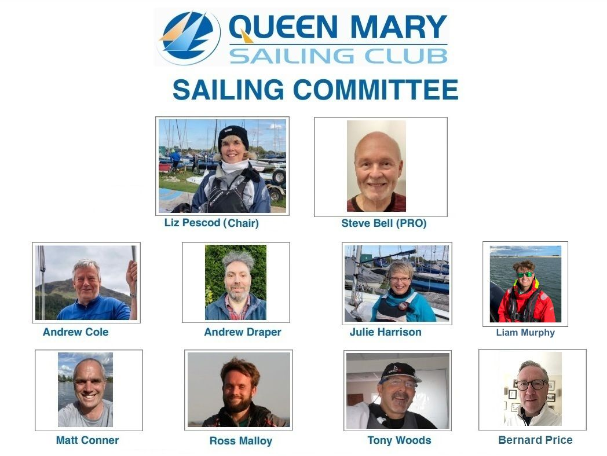

Sailing Committee
Queen Mary Sailing Committee is made up of 8-10 Club members who represent a range of fleets and interests in the Club and includes the Sailing Secretary and the Sailing Principal.
The current committee members are:
|
|

The responsibilities and aims of the sailing committee are as follows:
Aim: To provide and promote high quality, fair and fun fleet and handicap racing as measured by member and visitor surveys and informal feedback. Fleet racing as priority.
Responsibilities of Sailing Committee:
Club Racing – Policy and delivery
- Schedule (Weekends, Evening, Bank Holidays)
- Format (Approved classes, Starts, Courses, Races to count)
- NORs and SIs
- Handicaps and RYA PYN Return
- Application of the RYA Racing Charter (self-policing and hearings)
- Promotion and training – Introductory and advanced
Race Officer Development
- Numbers needed (Club, Region, National) for club racing and open meetings
- Identifying and training new ROs
- Developing existing ROs to higher standards and higher levels
Open Meetings and Events
- Policy for which open meetings and events are hosted
- Guidelines to the office on booking to this policy
- NOR and SIs (in conjunction with requesting body as appropriate)
- Bloody Mary policy and on-water team planning and assignment